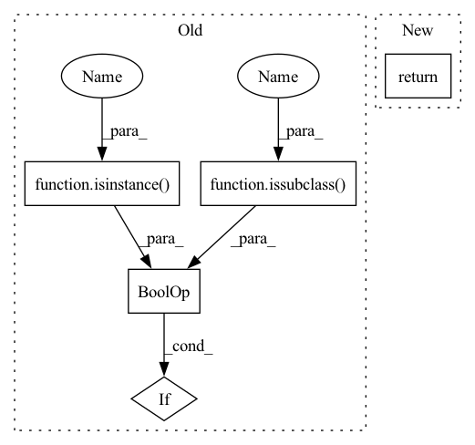

Pattern ID :21591
Before Change
if t is None:
return None
if (isinstance(t, tp.Type) and issubclass(t, types._Static)) or (
hasattr(t, "__origin__")
and isinstance(t.__origin__, tp.Type)
and issubclass(t.__origin__, types._Static)After Change
elif len(tree_types) == 1:
return tree_types[0]
else:
return (
t
if isinstance(t, type)
else t.__origin__In pattern: SUPERPATTERN
Frequency: 3
Non-data size: 5
Instances Fragment ID: 68979807
Project Name: cgarciae/treex
Commit Name: 1158262f8325593b345997ee9df903d1bfca73ab
Time: 2021-09-01
Author: cgarcia.e88@gmail.com
File Name: treex/module.py
M Class Name: AnonimousClass
N Class Name: AnonimousClass
M Method Name: _resolve_tree_type(2)
N Method Name: _resolve_tree_type(2)
M Parent Class:
N Parent Class:
M File Name: treex/module.py
N File Name: treex/module.py
M Start Line: 852
M End Line: 882
N Start Line: 860
N End Line: 883
Before Change
step_name = step
elif isinstance(step, zenml.steps.base_step.BaseStep):
step_name = step.name
elif isinstance(step, type) and issubclass(
step, zenml.steps.base_step.BaseStep
) :
step_name = step.__name__
elif "name" in kwargs and isinstance(kwargs.get("name"), str):
logger.warning(After Change
f"names: `{self.get_step_names()}`"
)
return self._steps[step]
def _ensure_steps_fetched(self) -> None:
Fetches all steps for this pipeline run from the metadata store. Fragment ID: 68979800
Project Name: maiot-io/zenml
Commit Name: 771bddac97bf99e5a1c9bad3b0227a187c592c51
Time: 2022-08-02
Author: felix@zenml.io
File Name: src/zenml/post_execution/pipeline_run.py
M Class Name: PipelineRunView
N Class Name: PipelineRunView
M Method Name: get_step(2)
N Method Name: get_step(2)
M Parent Class:
N Parent Class:
M File Name: src/zenml/post_execution/pipeline_run.py
N File Name: src/zenml/post_execution/pipeline_run.py
M Start Line: 163
M End Line: 236
N Start Line: 161
N End Line: 224
Before Change
else:
kwargs = kwargs.copy()
return rc, kwargs
elif (isinstance(reparameterisation, type) and
issubclass(reparameterisation, Reparameterisation)) :
return reparameterisation, {}
else:
raise RuntimeError("Reparmeterisation must a str or class that "After Change
dict
Keyword arguments for the specific reparameterisation.
return get_reparameterisation(reparameterisation, defaults=default_gw)
class DistanceReparameterisation(RescaleToBounds): Fragment ID: 68979798
Project Name: mj-will/nessai
Commit Name: 7c85fa861bb13249f0fd09ae8e38f3f326f32a78
Time: 2022-01-13
Author: michaeljw1@googlemail.com
File Name: nessai/gw/reparameterisations.py
M Class Name: AnonimousClass
N Class Name: AnonimousClass
M Method Name: get_gw_reparameterisation(1)
N Method Name: get_gw_reparameterisation(1)
M Parent Class:
N Parent Class:
M File Name: nessai/gw/reparameterisations.py
N File Name: nessai/gw/reparameterisations.py
M Start Line: 28
M End Line: 46
N Start Line: 42
N End Line: 42